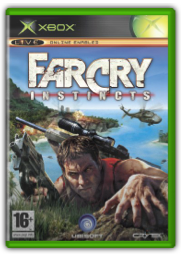

Borderlands
Take 2 Interactive
Borderlands
Take 2 Interactive
Borderlands sends up to four co-op players to the harsh frontier planet Pandora in search of a mysterious Alien Vault. Featuring unique first-person role-playing shooter gameplay, you'll customise your character as you explore and battle enemies in frantic first-person shooter combat.
And what would a role-playing shooter be without loot? Borderlands groundbreaking content generation system creates a near endless variety of weapons and items to customise your character! Players can join and leave other players' games at any time, or choose to face the challenges of Borderlands alone. All these features combine with a deep, rich fiction and a bold art style to create a breathtaking experience that challenges the conventions of modern shooters... Co-Op Design: Borderlands is built from the ground up to be an exciting, intuitive co-operative experience for up to four players simultaneously that rewards players who work together and invest in co-op skills. Split-screen is also supported.FPS Gameplay: In this role-playing shooter, choose one of four distinct characters, each with their own individual skill sets. As your character grows throughout this fast-paced FPS, you choose and customise your abilities to suit your style of play!Art Style: The distinctive art style combines traditional rendering techniques with hand-drawn textures to paint a bold and eye-catching spin on the FPS genre.Vehicular Combat: Jump behind the wheel and engage in high-speed vehicle-to-vehicle combat, complete with spectacular explosions and road-killed Skags!Frontier Planet: Search the wasteland planet of Pandora for the legendary Alien Vault. Fight your way through bandits, discover nine native (and aggressive) creatures, and help the few settlers on the planet in your search for a Vault rumoured to contain a great prize - if it even exists!

Far Cry Instincts
Ubisoft
In a nutshell:
Far Cry: Instincts sees you stuck on a gloriously rendered tropical island filled with lush jungle, limpid pools and heavily tooled-up mercenaries. Open-ended encounters offer far more cerebral exercise than your average run-and-gun, as well as the requisite trigger-pumping action. And then you start to discover the islands nasty little secrets…
The lowdown:
Although the full story mode is not in place yet, the environments, their contents and the sparse but important vehicles point to an exceptionally interesting console conversion of the PC classic. Graphics remain tantalisingly sharp and an underwater swim in one of the island’s many lagoons is exceptionally refreshing.
Most exciting moment:
So it’s you versus the mercenaries in a straightforward shooting match, right? Wrong. Far Cry has quite a few more tricks up its sleeve…
Since you ask:
Along with guns, explosives and vehicles, you can also set, bait and quietly observe traps in the undergrowth.
The bottom line:
If looks could kill, this would be lethal at 10 paces—how the rest fits together, time will tell.
Nick Gillett
Assassin's Creed II
Ubisoft
Renaissance Italy isn't the usual sort of setting for a video game, but then Assassin's Creed isn't one to play by the rules. Ezio Auditore di Firenze is yet another ancestor of modern day Desmond Miles - a nobleman out to avenge the death of his family in the guise of a shadowy assassin.
Like the last game you're given total freedom to explore multiple cities, but with greatly improved parkour skills and the new ability to swim. There's also a lot more variety in the missions you undertake - the main complaint with the original game- so you'll never feel you're just doing the same tasks over and over again.
Combat has also been completely overhauled, with dozens of different weapons and a new health system. With no less than Leonardo da Vinci acting as your very own Q style gadget master this stunning sequel improves on every element of the original. Renaissance man: Play as an all-new character in 15th century Italy, with new abilities, new weapons and a whole new world to explore.The spice of life: Massively improved mission variety, with new freeform mission structures and many more random events.Tools of the trade: All-new combat system lets you steal weapons from your opponents, use dual hidden blades and even an early form of pistol.Real history: Meet historical figures such as Leonardo da Vinci, Niccol Machiavelli and Lorenzo de' Medici, all of whom can offer you their own unique brand of aid.Tourist spots: Explore real world locations including Rome, Venice, Florence and Tuscany, as well as specific landmarks such as the Grand Canal and St Mark's Basilica.
|


 Made with Delicious Library
Made with Delicious Library